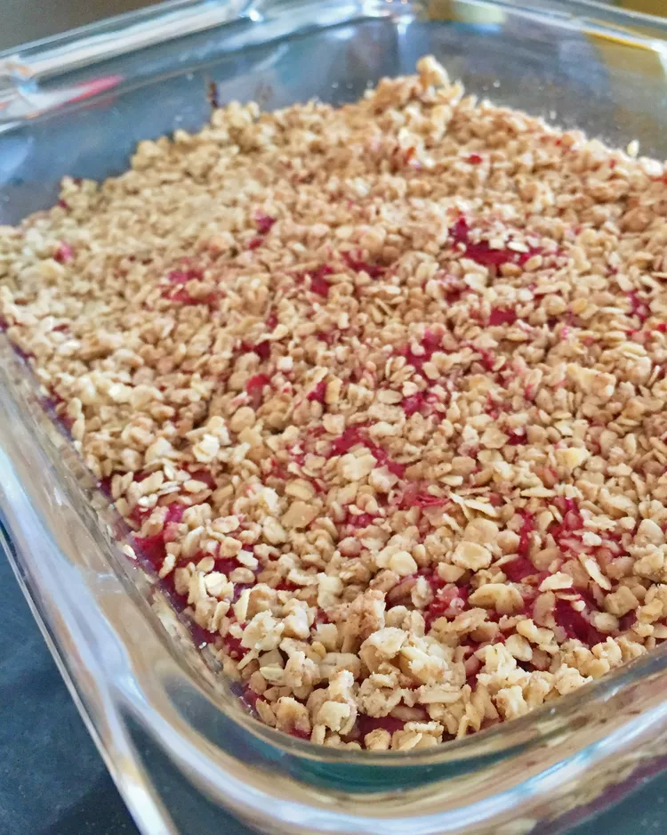

Rhubarb Crumble Bars

A healthier choice than the others
For this crumble bar recipe, I substituted 1 cup fresh blueberries for approximately 3 cups of chopped rhubarb. I also could not find coconut sugar, so I had to use just regular sugar.
Ingredients:
- cooking spray
- Filling:
- ⅓ cup water
- ¼ cup white sugar
- 3 cups chopped rhubarb
- Topping:
- ½ cup old-fashioned oats
- 2 tablespoons whole wheat flour
- 1 teaspoon ground cinnamon
- 4 teaspoons pure maple syrup, room temperature
- 2 teaspoons unsalted butter, melted
- Crust:
- ⅔ cup all-purpose flour
- ¼ teaspoon baking powder
- ¼ teaspoon salt
- 2 tablespoons unsweetened cashew milk, room temperature
- 1 tablespoon unsalted butter, melted
- 1 teaspoon vanilla extract
- 4 tablespoons white sugar
Steps:
- Preheat the oven to 350 degrees F (175 degrees C). Coat an 8x4-inch loaf pan with nonstick cooking spray.
- Mix water and sugar in a deep saucepan, making sure sugar is completely mixed in. Bring to a low boil over medium heat. Stir in rhubarb and let simmer, uncovered, until rhubarb becomes mushy, about 10 minutes. Add a couple tablespoons water if needed to help soften. Remove from heat and set rhubarb aside in a bowl.
- Stir oats, whole wheat flour, and cinnamon together in a bowl. Make a well in the center of the oat mixture. Pour in maple syrup and butter; stir until all ingredients are incorporated. Set topping aside.
- Whisk all-purpose flour, baking powder, and salt for crust together in a small bowl.
- Whisk cashew milk, butter, and vanilla extract together in a bowl. Stir in sugar. Pour into crust flour mixture, stirring just until incorporated.
- Press crust into the bottom of the prepared pan using a spatula; wet your spatula with water to prevent sticking. Spread rhubarb filling evenly over the crust. Sprinkle oat topping mixture on top of rhubarb.
- Bake in the preheated oven until juices are bubbling and crust is golden, 15 to 19 minutes. Let cool completely to room temperature in the pan. Let bars rest for at least 3 hours before slicing and serving.